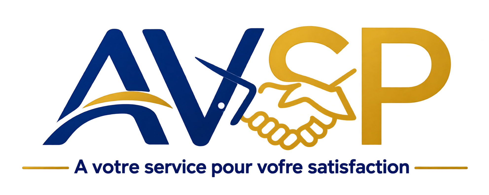
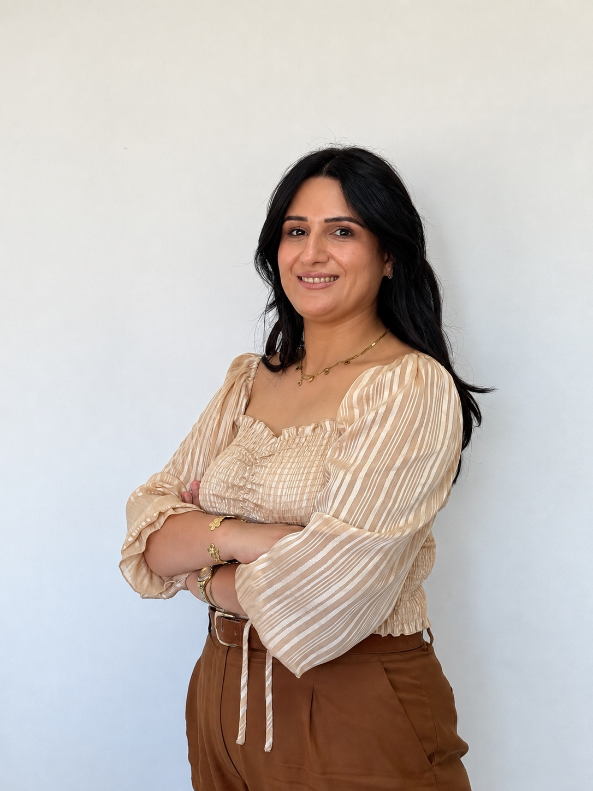
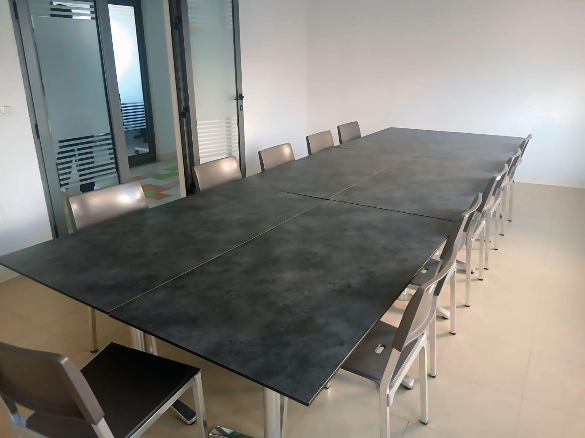

01
Product Development
From the first idea to a production-ready product, we support brands throughout the development process.

From concept to production, AVSP supports international fashion brands with product development, sourcing, sampling and production coordination in Tunisia.

Salma Garrouch — Founder & Managing Director of AVSP
Salma Garrouch’s professional career has been built within the textile industry, with extensive experience in garment manufacturing, workwear, and textile customization, including screen printing, embroidery, and various other personalization techniques.
As a Sales Manager, Salma worked closely with professional clients to understand their requirements and develop customized workwear and textile-marking projects. Her responsibilities included product development, material and accessory selection, order placement, and consistent follow-up throughout the process.
She also managed a textile platform working with more than 25 subcontractors, developing strong expertise in supplier coordination, order placement, production follow-up, and the management of multiple production partners.
Through this experience, Salma gained hands-on knowledge of the complete production process — from coordinating with workshops and placing orders to monitoring manufacturing, quality control, and delivery deadlines.
Her expertise also extends to quality management and RMQ (Quality Management Responsibility). She has supported and certified several companies according to recognized standards and frameworks, including OEKO-TEX and ISO 9001. This experience allows her to integrate quality requirements, traceability, and continuous improvement into the textile projects she manages.
Over the years, Salma has developed a strong understanding of both professional client expectations and the realities of textile production, with particular attention to quality, detail, order placement, responsiveness, and customer satisfaction.
This hands-on experience led her to establish AVSP, with the aim of providing brands and companies with reliable, personalized support for their textile projects, production orders, and textile customization needs.
Today, Salma’s vision is to build long-term partnerships based on trust, responsiveness, transparency, and Tunisian textile expertise.
Building trusted connections between brands, suppliers and Tunisian manufacturing partners.
Salma’s background combines commercial expertise, production coordination and quality management.
Experience coordinating a network of more than 25 textile production partners.
Hands-on experience with order placement, workshop coordination, manufacturing follow-up and deadlines.
Training and experience supporting companies with quality management, traceability and continuous improvement.
Experience supporting and certifying companies according to recognized quality standards and frameworks.
A complete support structure for brands developing and producing garments in Tunisia.
From the first idea to a production-ready product, we support brands throughout the development process.
We identify and source suitable fabrics and materials according to quality, composition, performance, price and production requirements.
Buttons, zippers, labels, embroidery, prints, badges and other garment components.
Pattern making, grading, technical adjustments and preparation of production-ready specifications.
Development of prototypes, fit samples and pre-production samples to validate the product before manufacturing.
We coordinate with manufacturing partners and follow each production stage from order confirmation to completion.
We follow product requirements and production progress to help maintain consistency with agreed specifications.
We facilitate communication and coordination between international brands, suppliers and Tunisian manufacturing partners.
A structured process designed to keep product development clear, coordinated and efficient.
Product requirements, targets and specifications.
Fabrics, trims, suppliers and partners.
Patterns, technical details and prototypes.
Fit and pre-production sample validation.
Production coordination and follow-up.
Final coordination and logistics support.
Knowledge of the Tunisian textile and manufacturing ecosystem and its local partners.
Support across product development, sourcing, technical work, sampling and production coordination.
Clear communication between international brands, suppliers and Tunisian manufacturing partners.
Focused follow-up on materials, specifications, samples and production requirements.

Our facilities provide a professional setting for meetings, product discussions, development work and coordination with clients and partners.
AVSP combines local presence with a structured approach to international production coordination.
Whether you are developing a new collection, looking for fabrics and trims, or seeking production coordination in Tunisia, AVSP is ready to discuss your requirements.